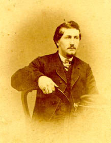

Possibly a photograph of Thomas M. Smiley
from the Special Collections of the University of Virginia.
The letter discusses the prospect of buying some clothes and also provides updates on school.
The letter gives an update on daily life, discussing for example a concert and the fashion choices of the writers' friends and family. The letter also mentions a recent "mournful" ceremony, without elaborating. Note the date of the letter: perhaps this ceremony was related to the Civil War's end.
A balance sheet.
Smiley ponders the concept and meaning of beauty.
The letter declines an invitation to a party and provides Christian advice.
This letter discusses wedding arrangements (and dresses!) and provides several health updates. The letter also discusses a potential teaching position.
Smiley discusses the health, activities, and weddings of friends, family, and acquaintances.
Smiley delivers news about school and about her friends and acquaintances there. She discusses academics, weddings, social interactions, health, and general news. At one point she mentions hearing noise from outside and assuming it was "darkies shouting."
In this letter, Smiley provides updates--and makes inquiries--about her friends and family. She writes that she has been doing well in school.
In this letter N. J. Hull discusses his financial situation and the high costs of buying farming supplies. In addition, he asks Mr. Smiley to give him money so that he can maintain his farm and become successful in his occupation
Smiley writes about her headache and tooth problems. She also provides updates about friends, acquaintances, church, and school. And mentions visiting "soldiers graves."
Return to the Aftermath Personal Papers